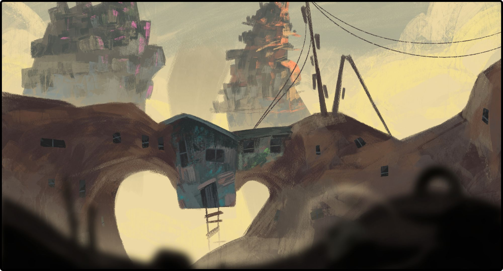
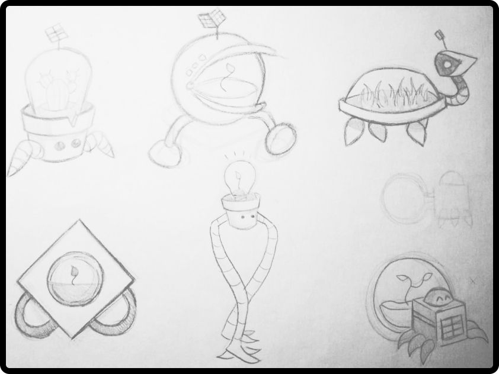
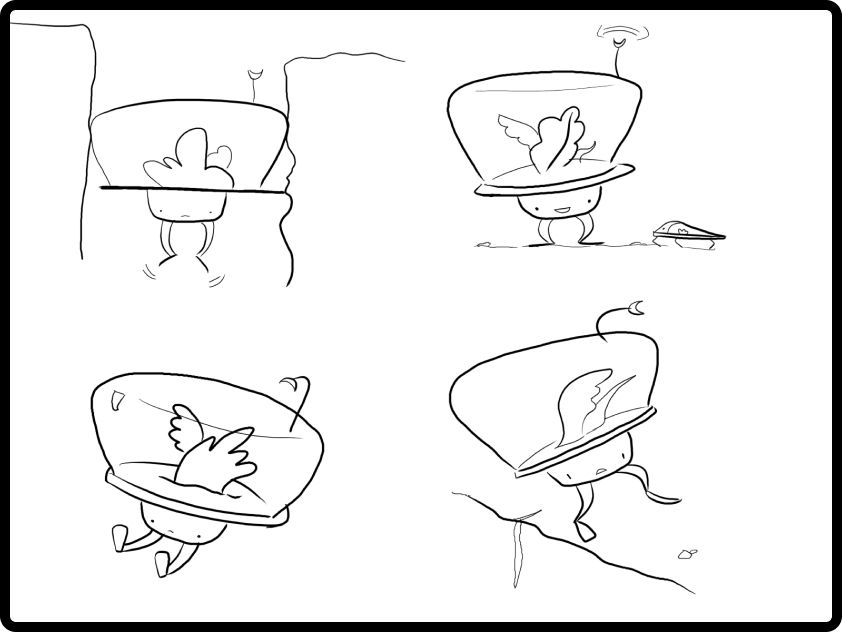
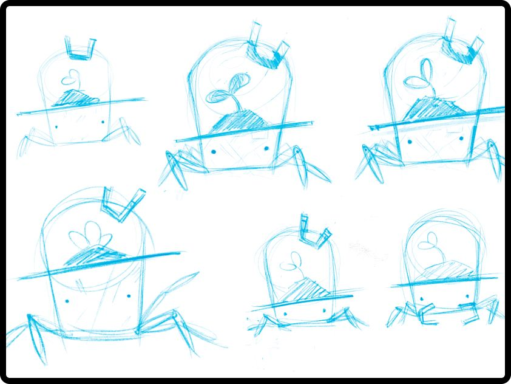
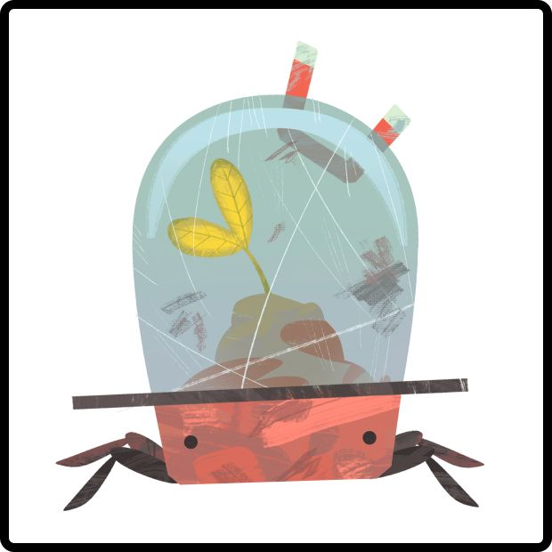
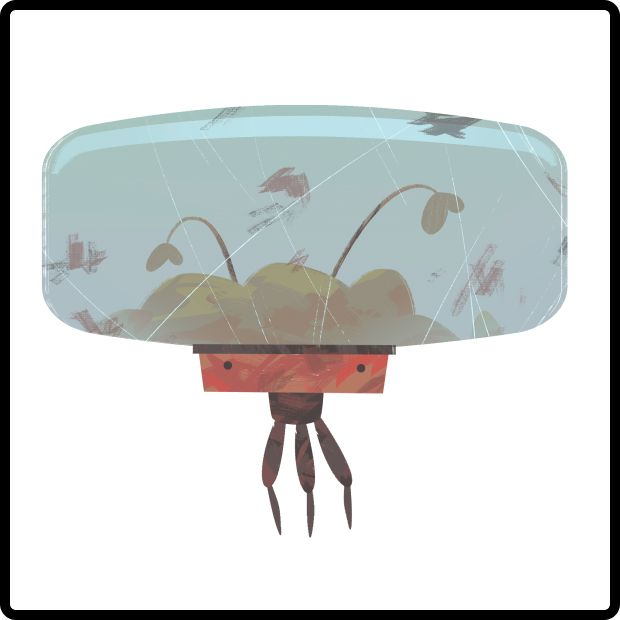
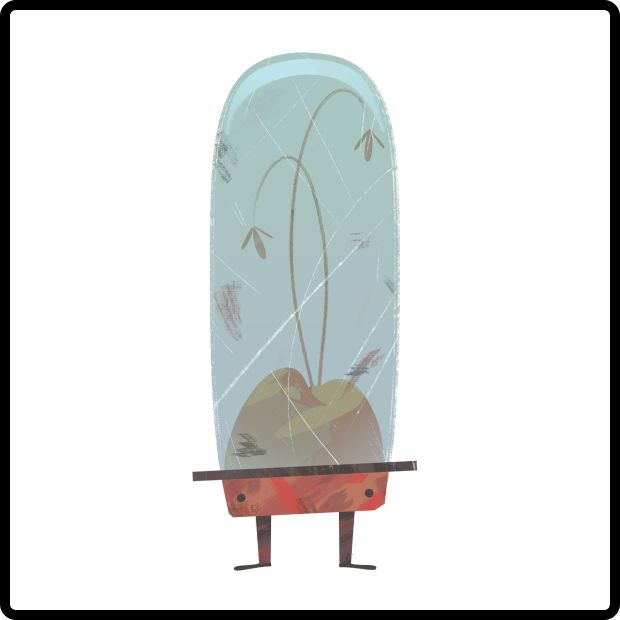
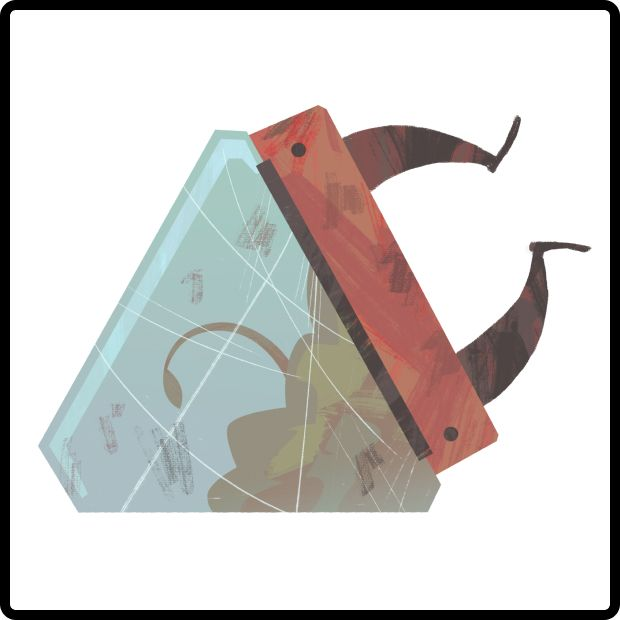
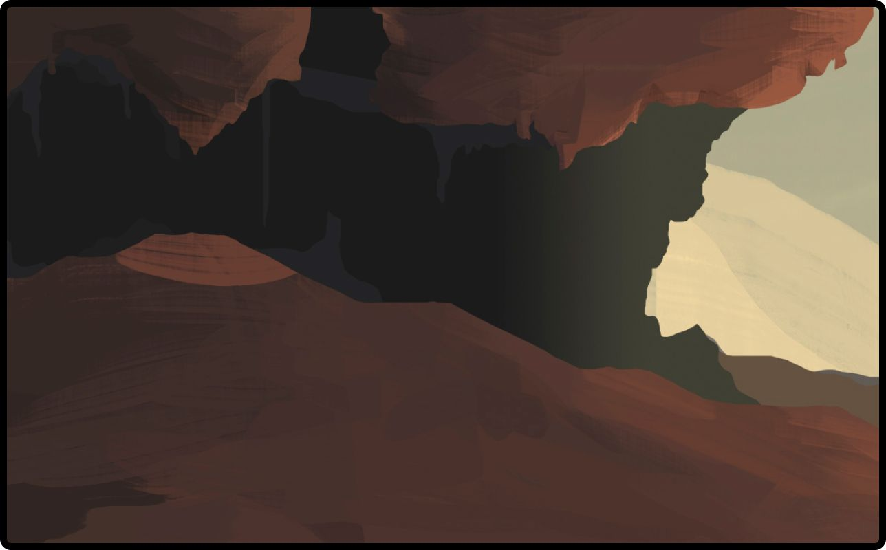
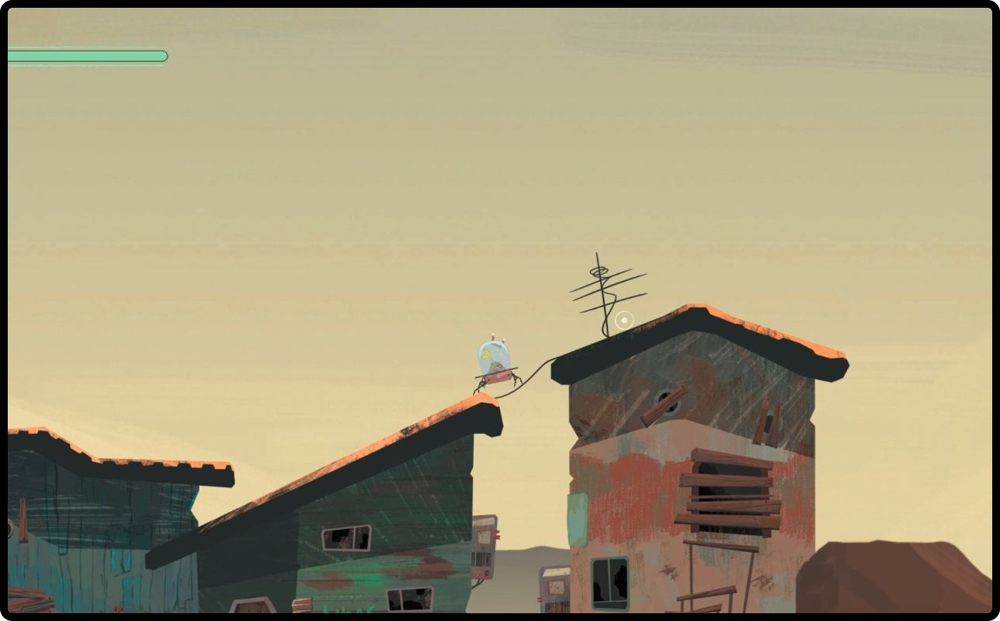

ux/ui designer · illustrator
Extra
Concept art
Concept art for a video game that was left half-finished. In a post-apocalyptic world, you are a small flowerpot robot who must carry the last living plant to the only fertile place where it can still grow. I designed the character, the environments and the game interface, such as the solar energy bar.
Type
Status
Technique
Year

From paper to character



Character design




How it plays
Ray moves and jumps on solar power: in the sun he recharges and in the shade he runs out of energy. Each puzzle is about finding the path of light. The movement studies explore how he squeezes through gaps, falls and climbs slopes.
Worldbuilding


Next extra